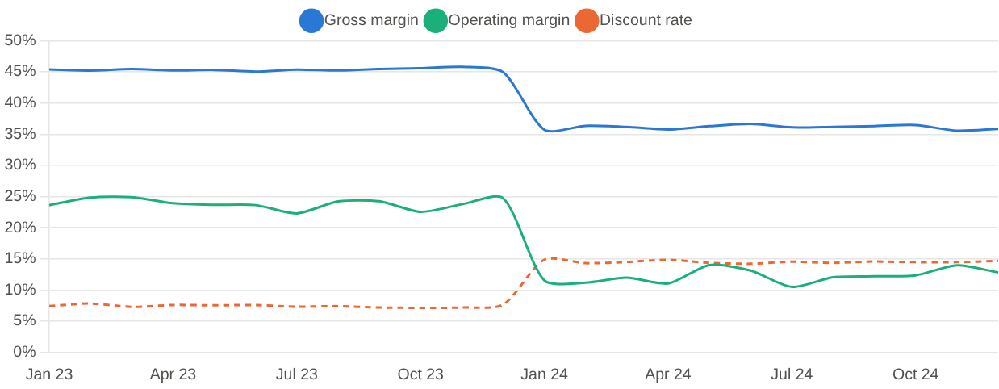
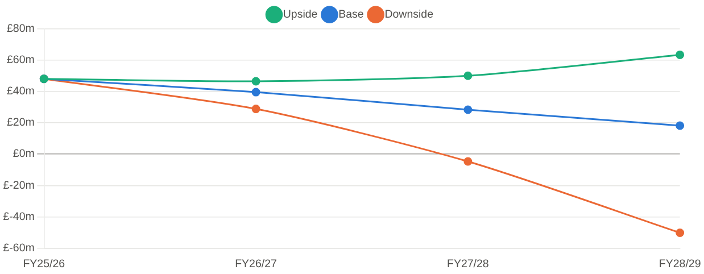
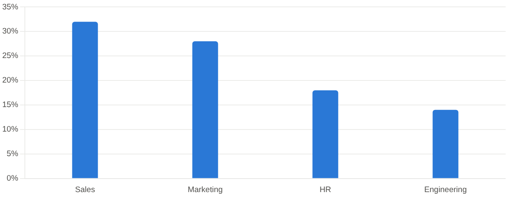
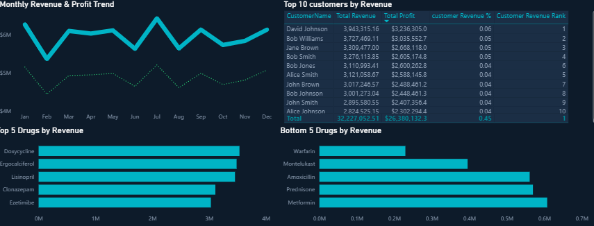

Featured · Excel financial model
A full three-statement financial model (P&L, cash flow and balance sheet) for a café and fitness concept, built from a single idea to a fundable business case. Seasonality-adjusted across 60 months, stress-tested with worst, base and best cases, and valued two ways: DCF and market multiples.


Revenue held flat but operating profit fell 48%. Traced it to discounts doubling from 7% to 15% and an 18% rise in cost of sales, using a variance model that flags the one month everything broke.

Driver-based forecast for a £312m university. The base case shows cash reserves falling 62% and margin close to zero; the downside turns cash negative. Includes scenario analysis and recommendations.

Traced NextGen's 32% Sales turnover to a weak salary–performance link (0.28 correlation vs 0.72 in Engineering), flagged 31 at-risk employees and recommended performance-linked pay bands.

Analysed $71.3m of pharmaceutical sales at an 82% margin with SQL, finding a 45% revenue concentration in the top 10 customers and a 'Seller' segment worth 7× more than 'Users'.